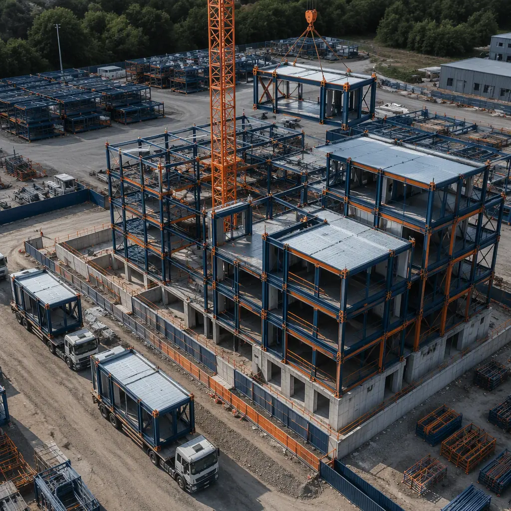
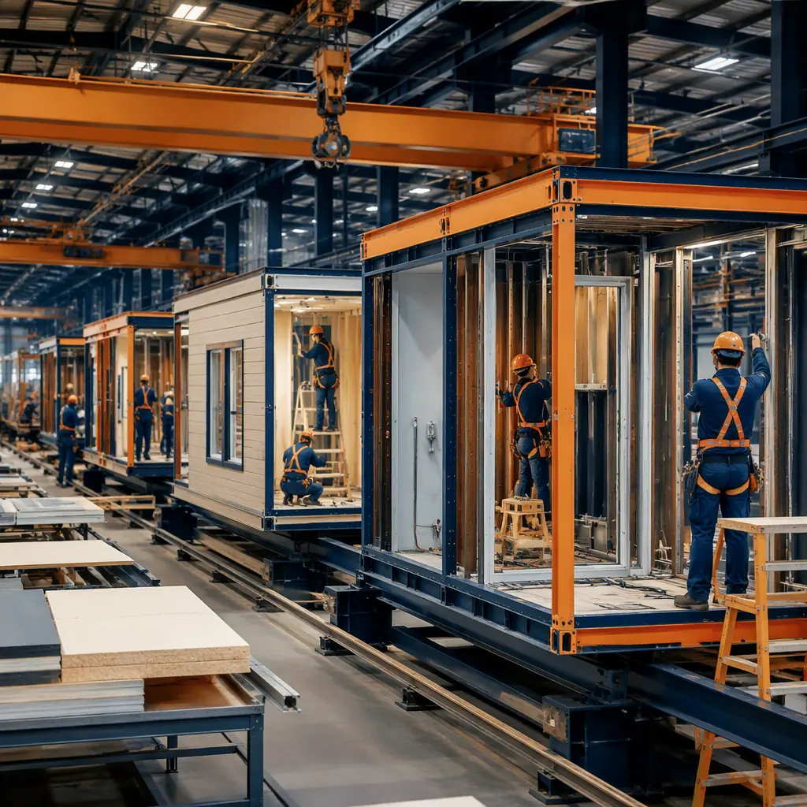
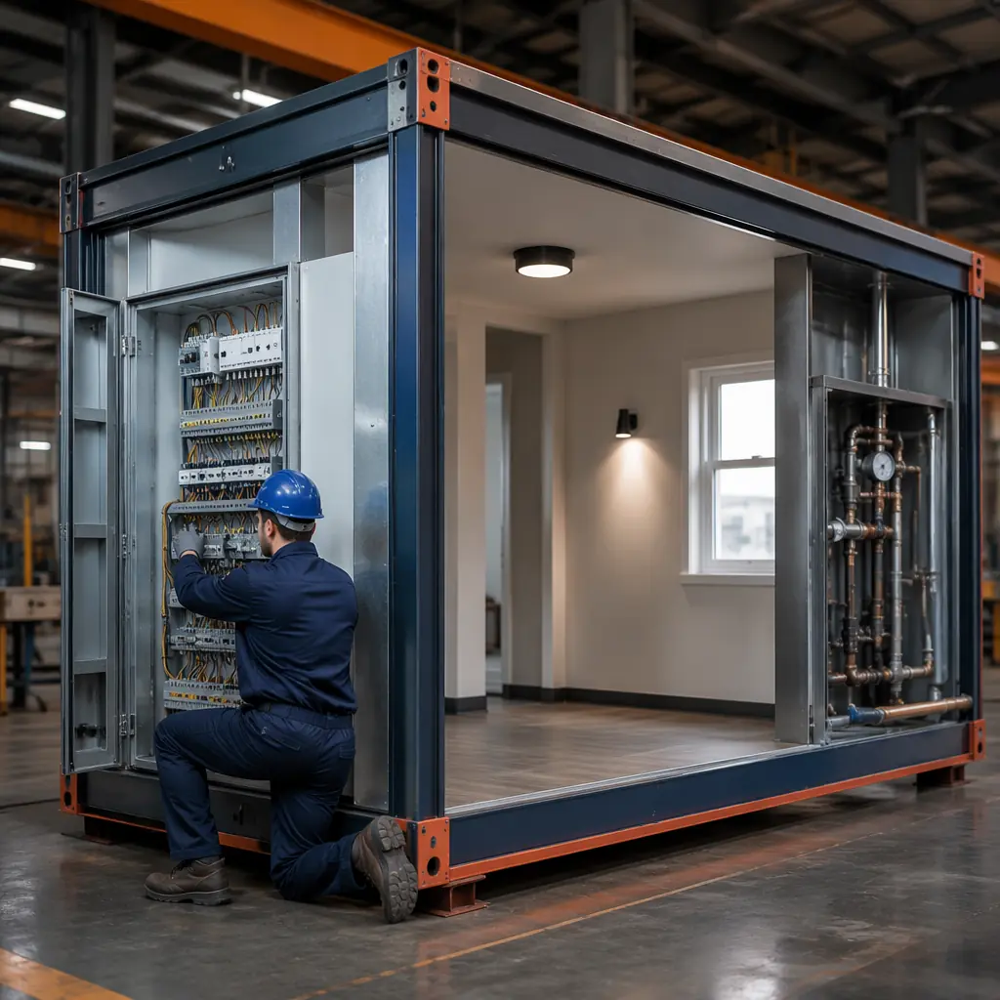

Construction is one of the riskiest industries on the planet. McKinsey research shows that 80% of large construction projects exceed their original budget, and the average schedule overrun is 20 months. For developers, hospital administrators, and hotel operators committing tens of millions of dollars to a building project, these statistics aren't just academic — they represent real financial exposure that can kill returns, delay revenue, and destroy stakeholder confidence. Modular construction doesn't just build faster — it systematically eliminates the root causes of construction's five largest risk categories.

Risk #1: Schedule Overrun — The $8,500-Per-Day Problem
The single largest financial risk in any construction project is time. A 200-room hotel losing $85/night ADR at 70% occupancy bleeds $11,900 per day of delayed opening. A 30-bed hospital wing defers $45,000–$60,000 per day in patient revenue. A 150-unit apartment building at $1,800/month represents $9,000 per day in lost rent. These numbers make schedule risk the dominant concern for any project sponsor.
Traditional construction's schedule vulnerability comes from sequential dependency: foundation work must finish before steel erection, which must finish before enclosure, which must finish before MEP rough-in. Each phase waits for the previous one, and a weather delay in month 2 cascades through every subsequent trade. Modular construction eliminates this cascading risk by running site work and factory production in parallel:
| Risk Factor | Traditional Exposure | Modular Mitigation |
|---|---|---|
| Weather delays | Every phase exposed to rain, snow, extreme temperatures | 85% of work in climate-controlled factory; site phase compressed to 2–6 weeks |
| Subcontractor sequencing | One trade delay cascades through all downstream trades | 80% of trades integrated in factory, not sequenced on site |
| Material lead times | Late steel, windows, or MEP equipment stops all work | Bulk material procurement for factory production line reduces spot-market exposure |
| Inspection bottlenecks | Inspector availability gates each phase | Factory QC with third-party inspections on production schedule, not construction schedule |
For a detailed comparison of the timeline differences between modular and traditional delivery, see our comprehensive guide to modular vs traditional construction.

Risk #2: Budget Overrun — The 92% Solution
Industry data shows that 92% of modular construction projects deliver within 5% of the contracted budget, compared to approximately 35% for traditional construction projects. The difference isn't magic — it's a function of where the work happens and how it's priced.
Lump-sum certainty. When 70–85% of a building's value is produced in a factory, that portion is priced as a manufactured product with fixed unit costs — not as an on-site construction estimate with contingency allowances for weather, productivity variability, and unknown conditions. Each module is a known quantity: the 47th module costs the same as the 3rd, with no learning-curve surprises.
Change order reduction. Traditional construction averages 8–12% of contract value in change orders. Modular projects average 2–4%. The difference: factory production freezes the design before fabrication begins, eliminating the "we'll figure it out on site" mentality that generates expensive field changes.
Financing cost compression. A project built in 12 months instead of 24 saves 12 months of construction loan interest — typically $150,000–$400,000 on a $10 million project at current rates. For a complete breakdown of how modular construction changes the financing equation, see our guide to modular construction financing and our modular construction lending guide.
Risk #3: Quality Defects — Catching Errors Before They Leave the Factory
Construction defects follow a painful economic curve: an error caught in the factory costs $50–$200 to fix (repaint a wall, replace a fixture). The same error caught during on-site finishing costs $500–$2,000 (scaffolding, re-mobilization, schedule impact). Caught after occupancy, it costs $5,000–$50,000 (disruption, warranty claim, reputation damage). Modular construction shifts defect detection left on this curve by orders of magnitude.
Factory quality control operates on a fundamentally different model from site inspection. In a factory, every module passes through defined QC gates where dimensional accuracy is verified against BIM models (±2mm), plumbing systems are pressure-tested, electrical circuits are continuity-checked, and finishes are inspected under consistent lighting. On a construction site, inspections happen when the inspector arrives, often after finishes have covered the work.
Our guide to modular construction factory QC systems details the specific inspection protocols that make this quality difference possible.

Risk #4: Site Safety — 70% Fewer Workers, 80% Fewer Incidents
The construction industry accounts for 20% of all workplace fatalities in the United States despite representing only 6% of the workforce. Falls from height, struck-by incidents, and caught-between accidents are endemic to job sites where workers operate at elevation, around heavy equipment, and in changing weather conditions.
Modular construction dramatically reduces this exposure by moving the majority of labor hours into a controlled factory environment:
- 70–80% fewer workers on site. A traditional 100-unit apartment project might have 80–120 workers on site daily for 18 months. A modular equivalent: 15–25 workers on site for 4–6 months, with production labor in the factory.
- Zero work at height for most tasks. Factory modules are built at ground level on production jigs. Workers don't install windows from scaffolding; they install them at waist height on the factory floor.
- Weather elimination. No working on icy roofs, no heat stress on summer slabs, no wind hazards for crane picks of small components — factory conditions are constant.
For a detailed analysis of how modular methods improve construction safety outcomes, see our guide to modular construction site safety.
Risk #5: Labor Shortage — The Workforce Crisis Modular Solves
The construction industry faces a structural labor shortage: 41% of the current workforce will retire by 2031, and the pipeline of new entrants is insufficient to replace them. For developers, this translates into schedule risk (can't find enough workers), cost risk (premium wages for scarce trades), and quality risk (inexperienced workers on complex tasks).
Modular construction transforms labor from a variable, weather-dependent, project-by-project resource into a stable manufacturing workforce. Factory production employs workers in consistent conditions with predictable hours and career progression — a fundamentally more attractive employment proposition than project-based site work. The result: 92% employee retention in modular factories versus 55–65% annual turnover in traditional construction trades. For workforce development strategies in modular construction, see our guide to skilled labor and workforce development.
Risk Quantification: What Does This Mean for Your Project?
For a representative $15 million commercial project (100-unit apartment building or 120-room hotel), the risk reduction from modular delivery translates into real financial outcomes:
| Risk Category | Traditional Exposure | Modular Exposure | Risk Reduction |
|---|---|---|---|
| Schedule overrun (>30 days) | 65% probability | 12% probability | 81% reduction |
| Budget overrun (>10%) | 45% probability | 8% probability | 82% reduction |
| Quality rework (>2% of contract) | 55% probability | 6% probability | 89% reduction |
| Lost-time safety incident | 1 per 40,000 site hours | 1 per 180,000 site hours | 78% reduction |
| Labor availability delay | 40% probability | 8% probability | 80% reduction |
Developers don't choose modular because they love factories. They choose it because the risk math is undeniable: 80%+ reduction across every major risk category, backed by project data from 500+ completed modular buildings across 18 countries.
Insurance Implications — Lower Risk, Lower Premiums
The risk reduction inherent in modular construction translates directly into insurance savings. Builder's risk policies for modular projects typically carry 15–30% lower premiums than equivalent traditional projects, reflecting the shorter exposure period, reduced site labor, and factory-controlled quality. For projects in catastrophe-exposed zones (hurricane, earthquake), the difference can be even larger because modules are engineered for transport loads that exceed most environmental design loads. Our guide to modular construction insurance and risk management provides detailed premium comparison data across project types and regions.
Construction risk isn't something to be managed with contingency budgets and crossed fingers. It's a structural problem created by building complex products outdoors, in variable conditions, with transient labor, and sequential dependencies. Modular construction solves it at the root by moving the majority of production into a controlled factory environment where quality, schedule, cost, and safety are engineered outcomes rather than hoped-for results. For a complete analysis of how modular delivery compares financially across building types, see our modular construction ROI developer's guide.
Ready to de-risk your next construction project? Contact our team for a risk assessment and modular delivery timeline for your specific building type. Our engineering team provides quantified risk reduction estimates based on 500+ completed projects.